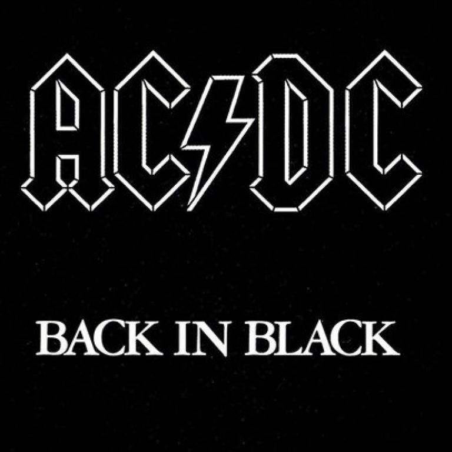
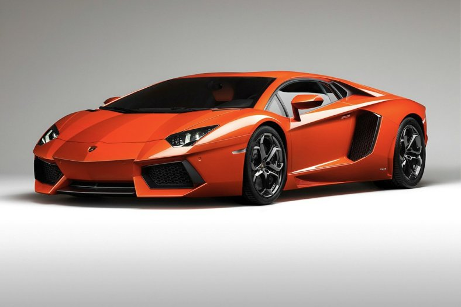
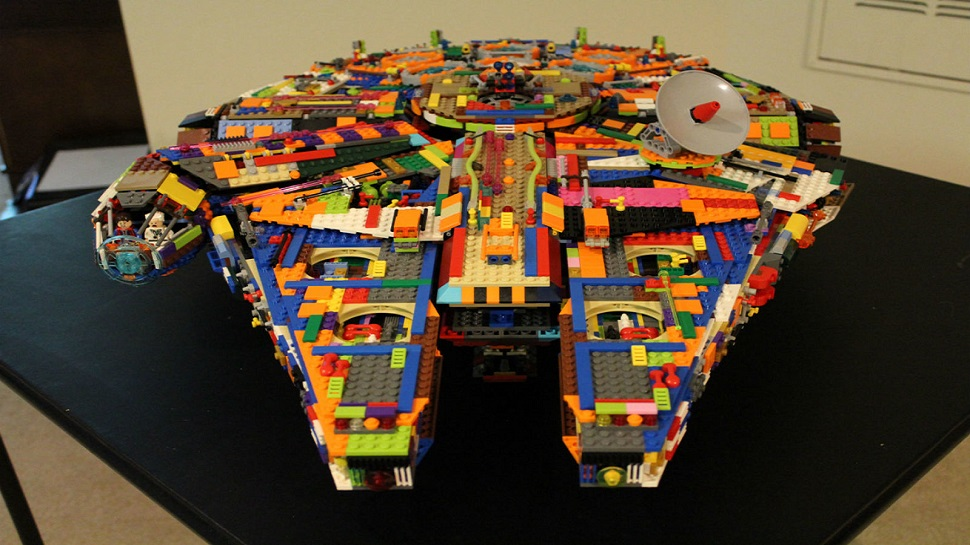

Podariu Alexandru
|
- Rock-ul
- Tehnologia si Informatica
- Fotografia
- Masinile
- Lego-urile
- Star Wars si Star Trek
Pasiunile mele sunt:
Multi spun ca doar rockerii isi lasa parul lung. Imi place mult rock-ul, dar mi-am lasat parul lung nu neaparat pentru ca imi place genul, dar si pentru ca imi place cum arat. Unele dintre trupele mele preferate sunt: Metallica, Guns N' Roses, AC/DC, Nirvana, Twisted Sister, Nickelback si Linkin Park.
Tot timpul mi-a placut sa fiu la curent cu specificatiile telefoanelor, tabletelor, calculatoarelor, consolelor de jocuri si multor altor dispozitive si sa le compar si sa aflu care e mai bun, si de ce. O data ce am ajuns in clasa a 9-a, aceasta pasiune a mea a crescut, evident.
Poate ca nu am echipamentul corect(telefonul, dar cu o camera excelent), dar asta nu ma opreste sa fac poze la cam tot ce vad. De cand am facut upgrade la sfarsitul anului trecut de la un telefon midrange din 2014 la unul flagship din 2017, am obtinut poze fantastice, de care sunt chiar mandru. Nu ma consider un fotograf, ci mai mult un adept al fotografiei.
Mereu am avut o pasiune pentru masini, de mic pentru masinile de jucarie, iar acum pentru machete. Orice "car guy" trebuie sa aiba o masina favorita. In cazul meu este vorba de Lamborghini-ul Aventador Coupe din 2011. De ce? Pur si simplu. Cum sa nu iti placa acest Lamborghini. Cu un motor V12 magnific si un design futurist, masina aceasta e incredibila.
Lego. Multe persoane(mai ales copii) s-au jucat si se joaca cu Lego. Cum au ajuns Lego-urile sa fie o pasiune pentru mine este o alta poveste. Pana si acum, la 15 ani mai construiesc cu Lego. Din cand in cand mai cumpar cate un set nou(cele mai multe Star Wars), chiar daca nu ma incadrez in varsta scrisa pe niciunul dintre seturile acestea, dar cine mai tine cont. Sunt distractive, punct.
Star Wars si Star Trek. Doua francize de film pe care necunoscatorii le incurca mereu. Nici eu nu puteam face diferenta(nici nu stiam de Star Trek) pana in 2015. Pana atunci am crezut ca Star Wars e ceva serie de filme fara sens. Cat de mult am gresit. Dupa ce am vazut primele 6 filme mi-am dat seama de greseala facuta. La fel si in cazul Star Trek.
The end.
  